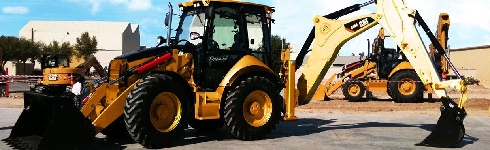
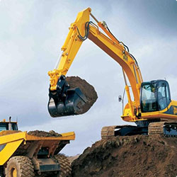
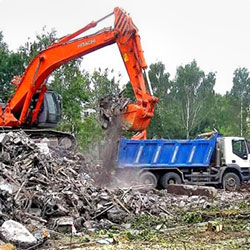
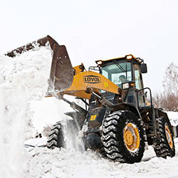

О НАС
Компания «СпецАвтоТрак» занимается поставкой сыпучих строительных материалов по Ленинградской области и Санкт-Петербургу, обеспечивая строительные компании и частных застройщиков, поставляя качественный песок, щебень и другие сыпучие строительные материалы, которые применяются в различных областях современного строительства.
Песок
Песок является самым востребованным строительным материалом, поскольку применяется в дорожном и городском строительстве, его используют на всех этапах строительства, от укладки фундамента и до производства отделочных работ. При этом для каждого вида строительных работ используют песок различного вида. Мы поставляем строительный песок всех видов:
- речной;
- карьерный;
- кварцевый.
Речной песок добывается в бассейнах рек и имеет высокие качественные характеристики, его можно использоваться для оформления ландшафта и в отделочных работах. Следующий вид — карьерный песок — гораздо дешевле, а сфера его применения гораздо шире. Он используется в бетонных смесях. К этому виду относится также намывной песок, который, как и карьерный, добывается из горных пород, однако с применением гидромеханического способа, при котором он промывается водой, вследствие чего из него вымываются глинистые частицы и песок становится чище и качественней. Кварцевый песок применяют для очистки воды, поскольку он имеет свойство пропускать воду и отсеивать ненужные частицы. Кроме того, его внешний вид позволяет использовать его при создании декоративных штукатурок.
Щебень
Щебень относится к натуральным сыпучим строительным материалам, производится карьерным способом и применяется в различных областях строительства. От фракции щебня зависит область его применения. Щебень используют в качестве наполнителя бетонных смесей, обратной засыпки при укладке фундамента, в качестве подушки, при строительстве дорог, как основное дорожное покрытие.
Услуги компании «Спецавтотрак»
-

Вывоз грунта
После окончания, так называемого нулевого цикла работ, которые предшествуют любому строительству, образуются разнообразные груды
отходов, среди которых наибольшее место занимает грунт. Ведь нулевой цикл работ предполагает рытье шахт, тоннелей и разработку котлованов.
Для обывателя, вывоз строительного грунта кажется не столь важным и достаточно простым делом, но каждый строитель знает, насколько этот момент важен. Большая часть извлеченного грунта, порядка 80-90%, не пригодна для дальнейшего использования в строительстве. Если не организовать правильный и своевременный вывоз грунта со стройплощадки, он будет накапливаться и мешать строительству, тем самым, замедляя его. Это чревато срывом сроков сдачи строительного объекта, а соответственно, и дополнительными расходами.
-

Вывоз мусора
Ремонт — нужное и важное занятие. Но после него, в квартире и доме становится намного больше работы. В частности, необходимо вывезти весь накопившийся строительный мусор. Впрочем, после стройки такого мусора скапливается еще больше.
Именно поэтому, вывоз строительного мусора — актуальная и востребованная услуга.
Для того, чтобы избавить владельцев от заботы вывоза и утилизации мусора, многие компании предлагают свои услуги в этой сфере.
-

Вывоз снега
Уборка и вывоз снега — одна из самых важных составляющих коммунального хозяйства, а также требование законодательства, которые обязаны выполнять все компании и владельцы зданий.
В чем преимущества своевременной уборки снега?
Вывоз снега с территории — это не только требование закона, но и масса очевидных преимуществ, которые получает заказчик данной услуги.